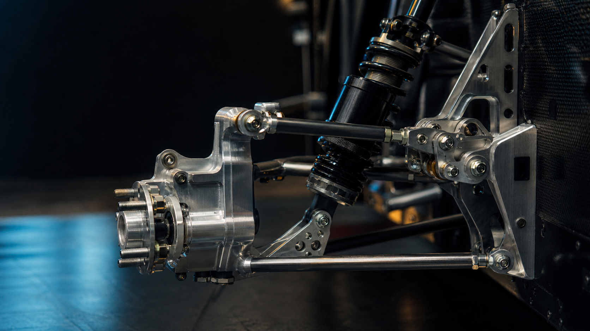

Scene 01 / Identity
Kyle Young
Mechanical Engineer — UCLA
Fig. KY-01 / Identity study
Mechanical Engineer
Researcher / Builder Suspension Lead
Scene 01 / Identity
Mechanical Engineer — UCLA


Scene 02 / Suspension
Suspension systems designed around real loads, packaging constraints, and vehicle-dynamics targets.


Scene 03 / Thermal Research
Infrared experiments, transient heat transfer, deposition modeling, and physics-informed analysis.


Scene 04 / Robotics
Competition robots and an independent program grown to more than 150 students across nine schools.
Scene 05 / Systems
A transition into selected work.
Explore selected workKY / 00
Kyle Young is a UCLA mechanical engineering student working across Formula SAE suspension, additive-manufacturing thermal research, biomedical flow analysis, robotics, aerospace manufacturing support, MEMS hardware, and 3D printed products. The common thread is practical engineering evidence: constraints made visible, parts made real, and results tied back to decisions.
Selected Work / 01
01 / Additive Manufacturing Thermal Research
Infrared and simulation-led investigation of material deposition, transient heat transfer, and the gap between model prediction and physical measurement.

02 / Bruin Formula Racing Suspension
Packaging suspension hardware that preserves motion-ratio targets, avoids subsystem interference, and survives dynamic load paths.


03 / FIRST Robotics
Karl 2023 and Phoenix 2024 sit under one robotics project: founding, funding, fabricating, packaging, repairing, and scaling an independent FRC program.
04 / Cerebrospinal Fluid Flow Research
A reproducible Python workflow for extracting, cleaning, comparing, and visualizing cerebrospinal-fluid flow features.
05 / Microfluidic Device Development
MEMS and microfluidic hardware work is part of Kyle's engineering range, but public project images and a standalone case study are not yet available in this repo.
Research / 02
Work area involving infrared experiments, transient heat transfer, deposition modeling, COMSOL, MATLAB, and Python. The homepage labels the public artifact gap instead of presenting generated imagery as proof.
Python workflow for importing, cleaning, normalizing, and visualizing physiological flow signals in Chiari malformation outcome assessment.
Read case studyLeadership / 03

Supported fabrication, subsystem packaging, grants, sponsorship, repair habits, and operating structure for more than 150 students across nine schools.
Read SF Unity case